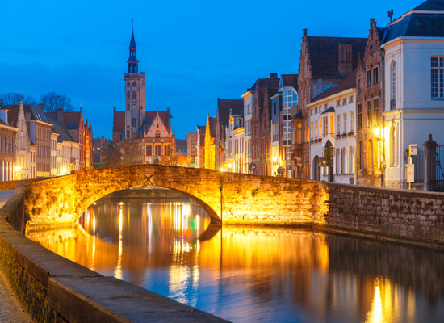
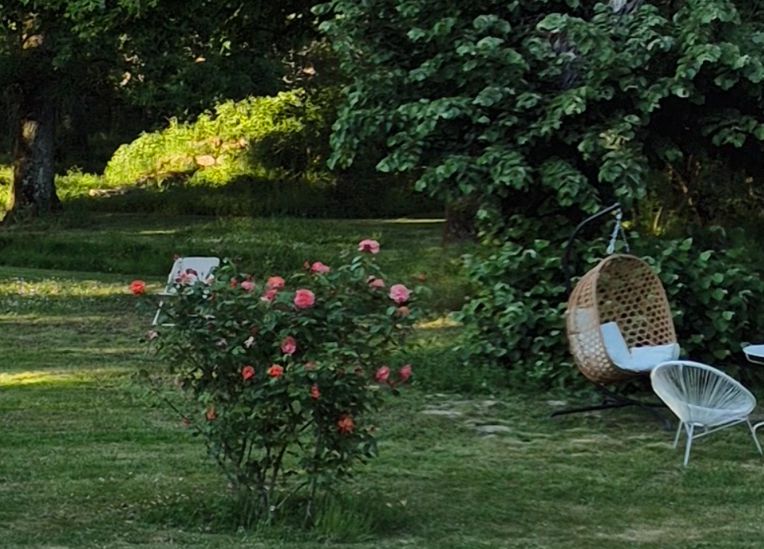
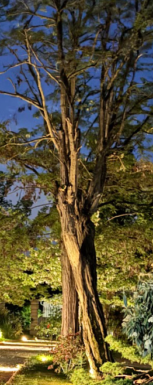

Le début du voyage
Bienvenue dans notre petit jardin secret. Pour l'instant, peu de choses sont révélées... Mais chaque détail aura son importance.
Premier indice :
La lumière trouve toujours son chemin.
19 Juin 2027
Nous sommes très heureux de pouvoir partager ce petit moment si spécial avec vous et de vous compter parmi nous pour notre mini mariage ! 🤍
Ce site sera notre petit espace pour vous dévoiler, au fil du temps, quelques indices sur le lieu, ainsi que toutes les informations utiles et petites surprises qui viendront s’ajouter progressivement.
Alors gardez l’œil ouvert… et laissez-vous guider jusqu’au grand jour ! ✨
Une histoire se prépare...
Quelques lumières apparaîtront,
quelques fleurs s'ouvriront,
nous avons hâte !
Bienvenue dans notre petit jardin secret. Pour l'instant, peu de choses sont révélées... Mais chaque détail aura son importance.
Premier indice :
La lumière trouve toujours son chemin.


